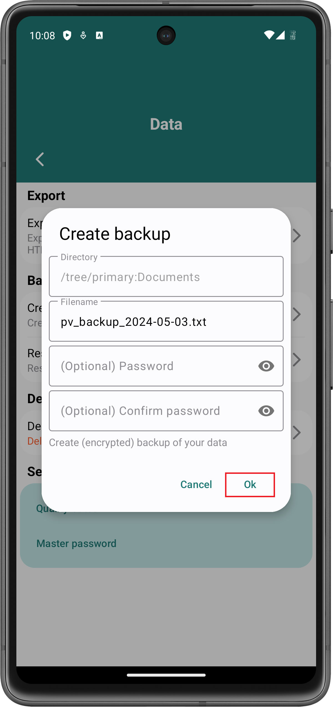

Erstelle Backups um Daten aus Password Vault zwischen Geräten zu transferieren oder um deine Daten auf ein anderes Gerät zu verschieben, falls du dein Android-Smartphone verlierst.
Um ein Backup zu erstellen, gehe zu Einstellungen > Daten und klicke auf den Backup erstellen-Knopf:

Danach öffnet sich der Dateiexplorer deines Android-Smartphones. Navigiere in den Ordner, in welchem du das Backup speichern möchtest und klicke auf den Diesen Ordner verwenden-Knopf. Unter Umständen musst du Password Vault genehmigen, die Inhalte dieses Ordners zu bearbeiten. Klicke in diesem Fall dazu auf Zulassen:
Danach öffnet sich ein Dialogfeld. Du kannst den Dateinamen für das Backup ändern. Klicke auf Okay um das Backup zu speichern.
Um ein Backup zu verschlüsseln, muss beim Erstellen des Backups ein Passwort angegeben werden:

Das Passwort wird verwendet, um das Backup zu verschlüsseln. Wenn das Backup wiederhergestellt werden soll, muss dieses Passwort angegeben werden. Andernfalls kann das Backup nicht entschlüsselt werden.
Um ein Backup wiederherzustellen, gehe zu Einstellungen > Daten und klicke auf Backup wiederherstellen:

Danach öffnet sich der Dateiexplorer deines Android-Gerätes. Navigiere zum Ordner, in welchem das wiederherzustellende Backup gespeichert ist und klicke auf die entsprechende Datei:

Danach wird das Backup automatisch wiederhergestellt.
Falls das Backup verschlüsselt war, öffnet sich ein Dialogfeld, in welchem das beim Erstellen angegebene Passwort eingegeben werden muss. Gebe das Passwort ein und klicke Okay:

Wenn das eingegebene Passwort korrekt ist, dann wird das Backup entschlüsselt und wiederhergestellt.